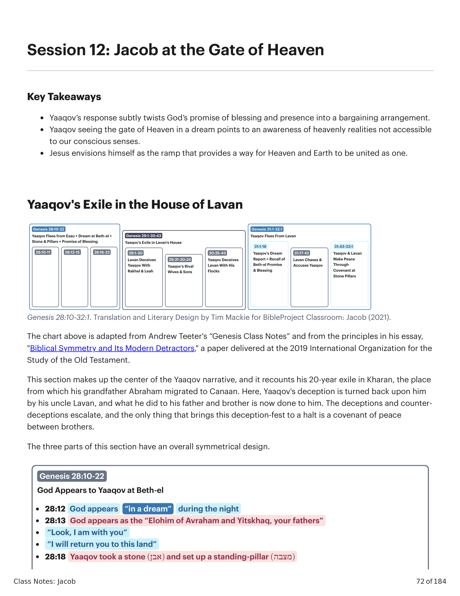
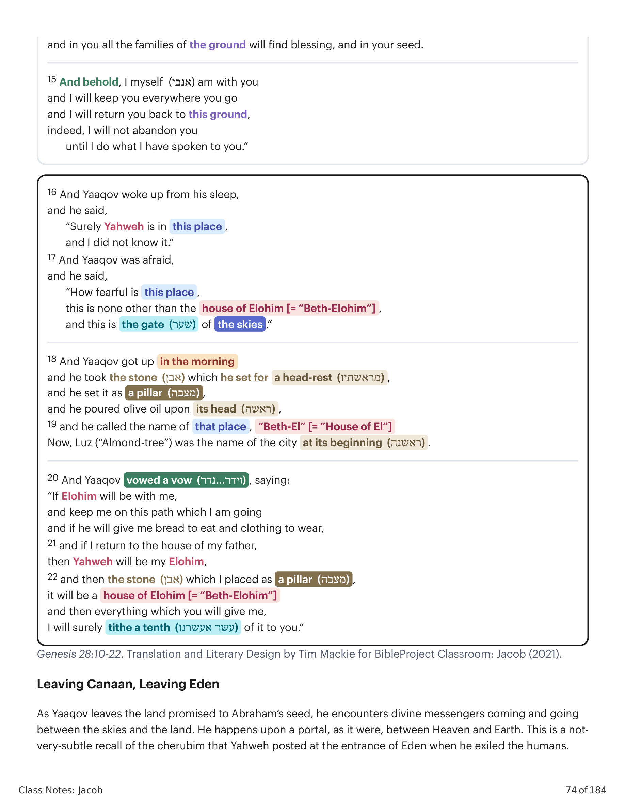
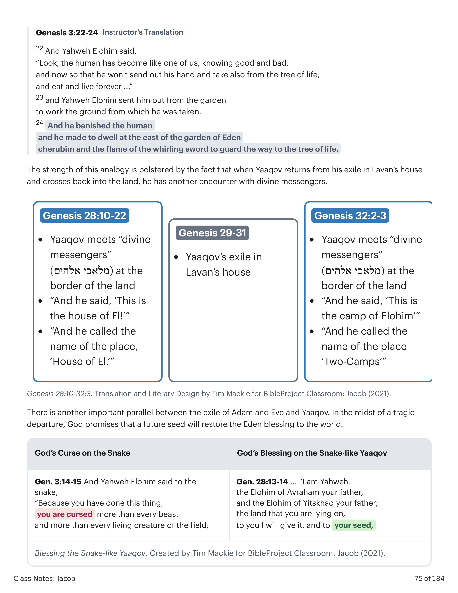
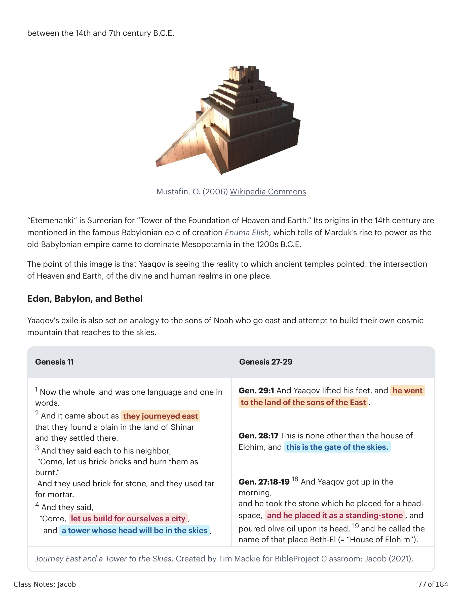
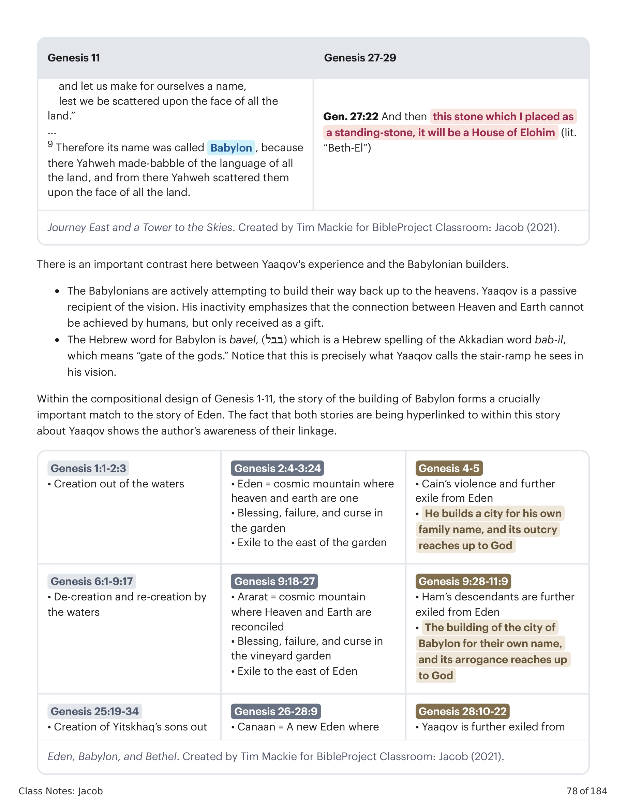
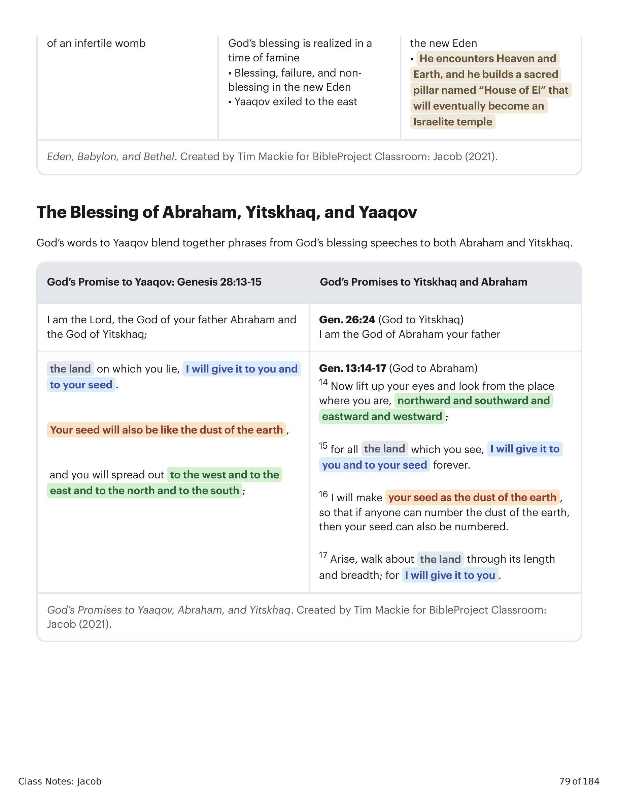

Esta seção forma o centro da narrativa de Yaaqov, e relata seu exílio de 20 anos em Kharan, o lugar de onde seu avô Abraão migrou para Canaã. Aqui, o engano de Yaaqov é devolvido por seu tio Lavan, e o que ele fez a seu pai e irmão agora é feito a ele. Os enganos e contra-enganos escalam, e a única coisa que põe fim a esse festival de engano é uma aliança de paz entre irmãos. As três partes desta seção têm um desenho simétrico geral.This section makes up the center of the Yaaqov narrative, and it recounts his 20-year exile in Kharan, the place from which his grandfather Abraham migrated to Canaan. Here, Yaaqov's deception is turned back upon him by his uncle Lavan, and what he did to his father and brother is now done to him. The deceptions and counter-deceptions escalate, and the only thing that brings this deception-fest to a halt is a covenant of peace between brothers. The three parts of this section have an overall symmetrical design.

Gênesis 28:10-32:1. Tradução e Design Literário por Tim Mackie para BibleProject Classroom: Jacó (2021).Genesis 28:10-32:1. Translation and Literary Design by Tim Mackie for BibleProject Classroom: Jacob (2021).
10 E Yaaqov saiu de Berseba e foi para Harã. 11 E encontrou aquele lugar, e ali passou a noite, pois o sol já se havia posto; e tomou das pedras (אבן) do lugar, e as pôs como travesseiro (מראשתיו), e deitou-se naquele lugar. 12 E teve um sonho, e eis uma rampa (סלם) posta sobre a terra, cujo topo (ראש) chegava aos céus; e eis que mensageiros de Elohim subiam e desciam por ela. 13 E eis que Yahweh se pôs (נצב) sobre ela e disse: "Eu mesmo (אני) sou Yahweh, o Elohim de Abraão teu pai e o Elohim de Yitskhaq teu pai; a terra em que estás deitado, a ti a darei e à tua semente. 14 E tua semente será como o pó da terra, e dilatar-se-á para o ocidente, e para o oriente, e para o norte, e para o sul; e em ti serão benditas todas as famílias da terra, e na tua semente. 15 E eis que eu mesmo (אנכי) estou contigo, e te guardarei por onde quer que fores, e te farei voltar a esta terra; não te deixarei até que faça o que te tenho falado." 16 E Yaaqov despertou do seu sono, e disse: "Certamente Yahweh está neste lugar, e eu não o sabia." 17 E temeu, e disse: "Quão temível é este lugar! Este não é senão a casa de Elohim [= 'Beth-Elohim'], e esta é a porta (שער) dos céus." 18 E Yaaqov levantou-se pela manhã, e tomou a pedra (אבן) que pusera por travesseiro, e a erigiu como coluna (מצבה), e derramou azeite sobre o seu topo (ראשה). 19 E chamou o nome daquele lugar "Beth-El" [= "Casa de El"]; Luz ("Árvore de Amendoeira") era o nome da cidade antes.10 And Yaaqov went out from Beer-Sheva and he went to Haran. 11 And he encountered the place, and he stayed the night there, for the sun had gone down, and he took from the stones (אבן) of the place, and he set his head-rest (מראשתיו), and he laid down in that place. 12 And he had a dream, and behold, a ramp was set (מצב) on the land, and its head (ראש) was in the skies, and behold, messengers of Elohim were going up and going down upon it. 13 And behold, Yahweh stood (נצב) upon it and said, "I myself (אני) am Yahweh the Elohim of Abraham your father and the Elohim of Yitskhaq your father; the land that you are lying on, to you I will give it, and to your seed. 14 And your seed will be like the dust of the land, and you will break out to the west, and to the east, and to the north, and to the south; and in you all the families of the ground will find blessing, and in your seed." 15 And behold, I myself (אנכי) am with you, and I will keep you everywhere you go, and I will return you back to this ground, indeed, I will not abandon you until I do what I have spoken to you." 16 And Yaaqov woke up from his sleep, and he said, "Surely Yahweh is in this place, and I did not know it." 17 And Yaaqov was afraid, and he said, "How fearful is this place, this is none other than the house of Elohim [= 'Beth-Elohim'], and this is the gate (שער) of the skies." 18 And Yaaqov got up in the morning, and he took the stone (אבן) which he set for a head-rest (מראשתיו), and he set it as a pillar (מצבה), and he poured olive oil upon its head (ראשה). 19 and he called the name of that place, "Beth-El" [= "House of El"]; Now, Luz ("Almond-tree") was the name of the city at its beginning (ראשנה).

Gênesis 28:10-22. Tradução e Design Literário por Tim Mackie para BibleProject Classroom: Jacó (2021).Genesis 28:10-22. Translation and Literary Design by Tim Mackie for BibleProject Classroom: Jacob (2021).
Ao deixar a terra prometida à semente de Abraão, Yaaqov encontra mensageiros divinos indo e vindo entre os céus e a terra. Ele depara com um portal, por assim dizer, entre Céu e Terra. Este é um recall não muito sutil dos querubins que Yahweh postou à entrada do Éden quando exilou os humanos. Há outro paralelo importante entre o exílio de Adão e Eva e Yaaqov: no meio de uma partida trágica, Deus promete que uma semente futura restaurará a bênção do Éden ao mundo.As Yaaqov leaves the land promised to Abraham's seed, he encounters divine messengers coming and going between the skies and the land. He happens upon a portal, as it were, between Heaven and Earth. This is a not-very-subtle recall of the cherubim that Yahweh posted at the entrance of Eden when he exiled the humans. There is another important parallel between the exile of Adam and Eve and Yaaqov: In the midst of a tragic departure, God promises that a future seed will restore the Eden blessing to the world.

Abençoando o Yaaqov Semelhante à Serpente. Criado por Tim Mackie para BibleProject Classroom: Jacó (2021).Blessing the Snake-like Yaaqov. Created by Tim Mackie for BibleProject Classroom: Jacob (2021).
Contudo, observe o contraste: Yaaqov é assemelhado à serpente enganosa (ambos são golpeadores de calcanhar), mas em vez de receber uma maldição, Deus lhe dá uma bênção. Em vez de uma sentença de morte, ele recebe uma promessa de vida. A imagem do sonho de Yaaqov revela um aspecto central do retrato da realidade na Bíblia: Céu e Terra são reinos distintos, mas não totalmente separados. Pelo contrário, foram feitos um para o outro, e se intersectam e se sobrepõem de modos que os humanos apenas vagamente percebem.However, notice the contrast: Yaaqov is likened to the deceitful snake (both are heel-strikers), but instead of receiving a curse, God gives him a blessing. Instead of a sentence of death, he is given a promise of life. The imagery of Yaaqov's dream reveals a core aspect of the Bible's portrait of reality: Heaven and Earth are distinct realms, but they're not wholly separate. Rather, they are made for one another, and they intersect and overlap in ways that humans only dimly perceive.

Jornada para o Leste e uma Torre aos Céus. Criado por Tim Mackie para BibleProject Classroom: Jacó (2021).Journey East and a Tower to the Skies. Created by Tim Mackie for BibleProject Classroom: Jacob (2021).
O exílio de Yaaqov também é posto em analogia aos filhos de Noé que vão para o leste e tentam construir sua própria montanha cósmica que alcança os céus. Há um contraste importante entre a experiência de Yaaqov e os construtores babilônicos. Os babilônicos tentam ativamente construir seu caminho de volta aos céus. Yaaqov é um recipiente passivo da visão. Sua inatividade enfatiza que a conexão entre Céu e Terra não pode ser alcançada por humanos, mas apenas recebida como dom.Yaaqov's exile is also set on analogy to the sons of Noah who go east and attempt to build their own cosmic mountain that reaches to the skies. There is an important contrast here between Yaaqov's experience and the Babylonian builders. The Babylonians are actively attempting to build their way back up to the heavens. Yaaqov is a passive recipient of the vision. His inactivity emphasizes that the connection between Heaven and Earth cannot be achieved by humans, but only received as a gift.

Éden, Babilônia e Betel. Criado por Tim Mackie para BibleProject Classroom: Jacó (2021).Eden, Babylon, and Bethel. Created by Tim Mackie for BibleProject Classroom: Jacob (2021).
As palavras de Deus a Yaaqov misturam frases dos discursos de bênção de Deus tanto a Abraão quanto a Yitskhaq. Deus promete a Yaaqov que todas as famílias da terra acharão bênção nele e em sua semente — a mesma promessa feita a Abraão e reiterada a Yitskhaq.God's words to Yaaqov blend together phrases from God's blessing speeches to both Abraham and Yitskhaq. God promises Yaaqov that all the families of the ground will find blessing through him and through his seed — the same promise made to Abraham and reiterated to Yitskhaq.

As Promessas de Deus a Yaaqov, Abraão e Yitskhaq. Criado por Tim Mackie para BibleProject Classroom: Jacó (2021).God's Promises to Yaaqov, Abraham, and Yitskhaq. Created by Tim Mackie for BibleProject Classroom: Jacob (2021).
20 E Yaaqov fez um voto (נדר), dizendo: "SE Elohim for comigo, e me guardar neste caminho que vou, e SE me der pão para comer e roupa para vestir, 21 e SE eu voltar à casa de meu pai, ENTÃO Yahweh será meu Elohim, 22 e ENTÃO esta pedra que pus como coluna será casa de Elohim, e tudo o que me deres, certamente dizimarei (עשר אעשרנו) um décimo disso para ti."20 And Yaaqov vowed a vow (וידר…נדר), saying: "If Elohim will be with me, and keep me on this path which I am going, and if he will give me bread to eat and clothing to wear, 21 and if I return to the house of my father, then Yahweh will be my Elohim, 22 and then the stone (אבן) which I placed as a pillar (מצבה), it will be a house of Elohim [= 'Beth-Elohim'], and then everything which you will give me, I will surely tithe a tenth (עשר אעשרנו) of it to you."
Yaaqov toma a promessa de proteção e bênção de Deus e a transforma em uma obrigação transacional da parte de Deus. Yahweh oferece dar a bênção dos antepassados de Yaaqov a ele como dom, mas Yaaqov a transforma em condição: Yahweh pode ser seu Deus se o proteger. Observe que Yaaqov reduz o escopo cósmico das promessas divinas aos confins de sua própria sobrevivência pessoal ("pão e roupa") e retorno à terra. "O trapaceiro Jacó agora está ligado a este Deus que preside todo o trapacear ainda por vir na narrativa. Deus se comprometeu com Jacó desde o oráculo de 25:23. Mas só agora Jacó também está ligado. A resposta de Jacó soa como um ato genuíno de fé. Mas Jacó será Jacó. Mesmo neste momento solene, ele ainda soa como um caçador de pechinchas. Ele ainda acrescenta um 'se' (v. 20)." — Brueggemann, Walter (1982). Gênesis: Interpretação.Yaaqov takes God's promise of protection and blessing and turns it into a transactional obligation on God's part. Yahweh offers to give the blessing of Yaaqov's ancestors to him as a gift, but Yaaqov turns it into a condition: Yahweh can be his God if he protects him. Notice that Yaaqov reduces the cosmic scope of the divine promises down to the confines of his own personal survival ("food and clothing") and return to the land. "Jacob the trickster is now bound to this God who presides over all the trickery yet to come in the narrative. God has been committed to Jacob since the oracle of 25:23. But only now is Jacob also bound. Jacob's response strikes one as a genuine act of faith. But Jacob will be Jacob. Even in this solemn moment, he still sounds like a bargain-hunter. He still adds an 'if' (v. 20)." — Brueggemann, Walter (1982). Genesis: Interpretation.
Gênesis 28:10-22 é a história fundadora do templo em Betel, que mais tarde se tornaria um centro idólatra de adoração para as tribos alienadas de Israel e eventualmente levaria à destruição e exílio de Israel (1 Reis 12:28-32; Amós 3:14, 4:4-5, 5:5-6). Esta história é aludida em um momento importante no Evangelho de João, onde Jesus está reunindo um Israel simbolicamente restaurado. João 1:44-51 retrata Jesus como Yahweh, convocando um Yaaqov/Israel moralmente transformado (Natalael, "israelita em quem não há dolo") a segui-lo. Os hiperlinks que João ativa mostram como a história de Yaaqov foi entendida em relação aos temas maiores sobre Yaaqov em ação no Tanak.Genesis 28:10-22 is the founding story of the temple at Bethel, which will later become an idolatrous center of worship for the estranged tribes of Israel and eventually lead to Israel's destruction and exile (1 Kings 12:28-32; Amos 3:14, 4:4-5, 5:5-6). This story is alluded to in an important moment in the Gospel of John, where Jesus is assembling a symbolic restored Israel. John 1:44-51 portrays Jesus as Yahweh, summoning a morally transformed (= new covenant) Yaaqov/Israel (Nathanael, "an Israelite indeed, in whom there is no deceit") to follow him. The hyperlinks that John is activating show how the Yaaqov story was understood in relationship to the larger themes about Yaaqov at work in the TaNaK.
Como o voto de Yaaqov de construir uma casa para Deus é uma paródia da visão que Deus lhe deu?How is Yaaqov's vow to build God a house a parody of the vision God gave him?